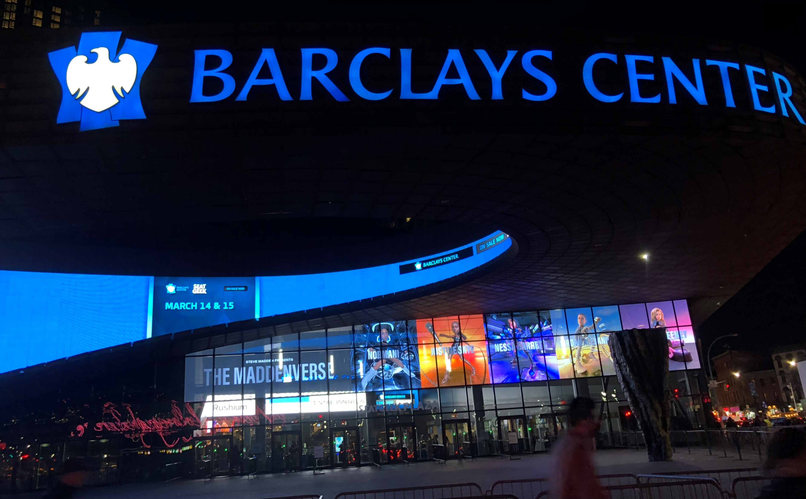
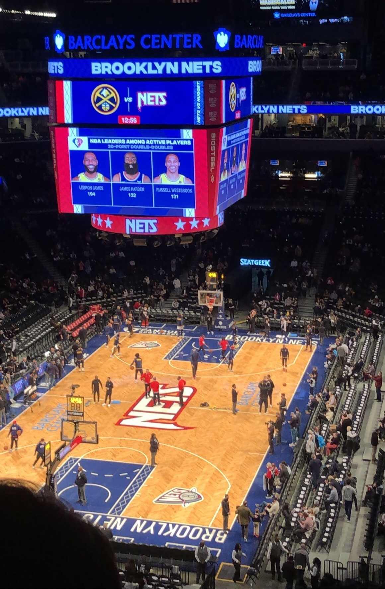
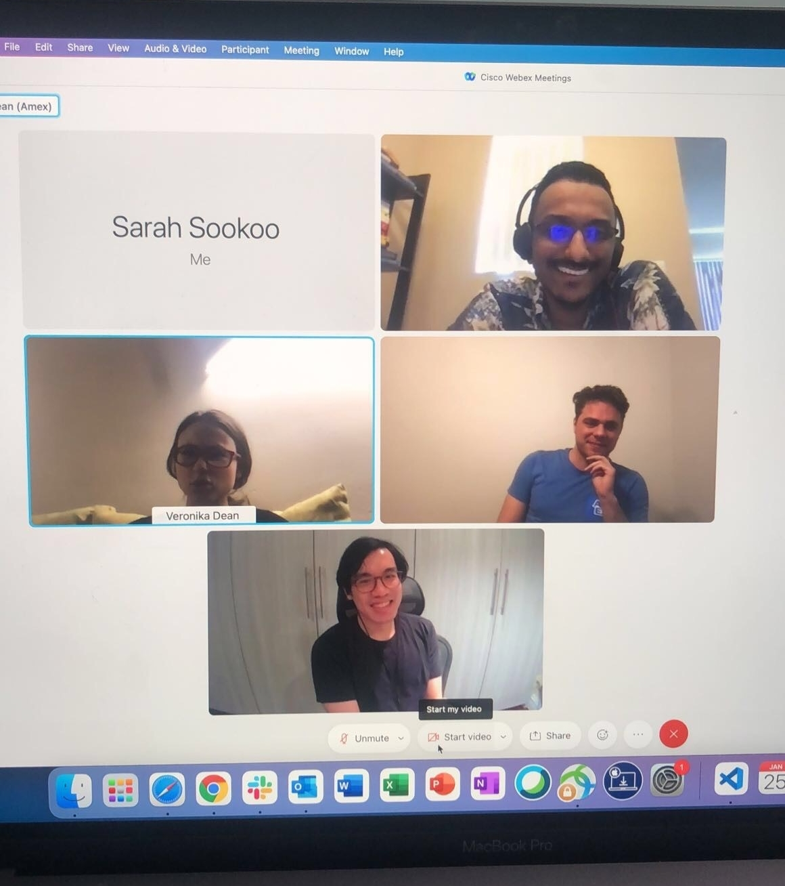
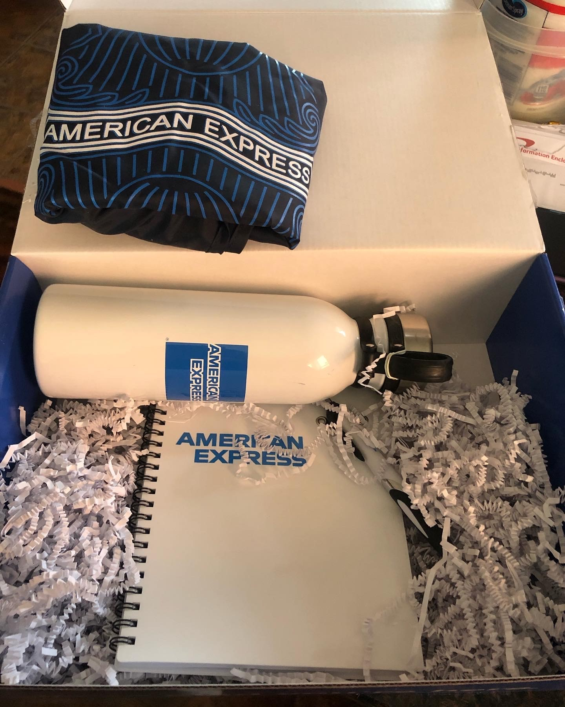

December 26th

Sharmin and I have a tradition where we always do something on the day after Christmas. Last year we made vision boards and we really like it so this year we decided to continue. It was a Sunday so I went to church, chilled for a bit and then I was on my way to her house. I got there at around 12:30. Once I arrived, we got straight to work. We both got our supplies and photos and started creating. This year, I printed out pictures of my actual goals instead of just inspirational words or photos of people. While we were making it, Sharmin's mom finished cooking lunch and she wanted us to eat it while it was hot so we paused everything and went to eat. While we ate, Sharmin and I watched The Vampire Diaries because that was the show I was currently watching and Sharmin had already watched it. When we were done eating we got back to working on our vision boards. There wasn't that much work left to do since we had already formatted everything. After that, we played some games and chilled. Then my dad came and picked me up. It was a fun and calm day.
January 8th
Earlier this week, I was randomly chosen by CUNY to get covid tested. I had to get tested at a CUNY site so that it would automatically be uploaded to my CUNY profile. Brooklyn College does testing on Saturdays and they open at 9am so to avoid lines, I went for 10am. It was a very smooth and fast process. When that was done I walked to the Q train station. I took the uptown Q train to newkirk plaza where Sharmin was supposed to hop on my train. She was late so I got off the train and waited for her in the train station.

When Sharmin arrived, we hopped on the Q train and took it to Times Square. First we went to H&M because it was the first store we saw as soon as we came out of the train station. We walked around a bit but they didn't really have anything good. Then we made our way to BOOKOFF, which was the bookstore that we had originally planned to go to. BOOKOFF is primarily a bookstore but they also sell pop figures, electronics, DVDs, CDs, and so much more. We spent about 2 hours in the store just browsing through book trying to find good ones. To be honest, it's such a cool store and a lot of the books are super cheap and in great condition!! After we were done there, we went to Forever 21 and surprisingly they had buy one get one free on all sale items. They had pretty nice stuff and for great prices, so we each picked up a couple things. Then went back to the train station and were on our way home. We hadn't went out in such a long time so it was a great day and worth it for all the things we got.
January 26th
This day was very long but it was so worth it. First I had to wake up super early because I had a 4 hour exam to take. I had already asked my job for time off for the exam so it was all good. I had to be at the site for 9am so I left home at around 8 since I was staying in Brooklyn. I got there at around 8:45 and I already saw a couple people lining up. I joined the line and asked the person in front of me if he was also there for the exam so I would know that I was in the right place. Soon after the security guard came around asking for IDs and the health screening. Once I showed it, I was allowed to enter the building. They checked my bags and scanned me and then I was able to go up to the testing room. Then they took all my electronics, checked my admissions ticket and took my fingerprint. I took my seat for the exam and started right away. I must say it wasn't as bad as I expected and I was prepared for all the content. It took me 2 hours to finish and an hour to check everything over. It was computerized so as soon as I finished and pressed submit, I saw my score and I passed!! After I finished I was feeling a bit wonky and I saw a covid testing site with no line right in front of the train station so I did a PCR test real quick.  I got the results that evening and it was negative! Once I got home, I ate, took a shower, and got dressed because Sharmin and I were going to a Nets game at Barclays center that night. Before the game though, I had a wrap up meeting for my internship since it was our last day. There was me, the 2 other interns in my group and our 3 leaders. We talked about how much we learned and accomplished and our leaders expressed how proud they were of us. It was so cute. Right after the meeting I left home. We aimed to get there for 6pm since the doors were opening at 6:30. Once we got there, we didn't want to wait in the cold so we walked around Atlantic Terminal Mall. When it was 6:30 we headed over to Barclays and when through the whole screening process. It was all good and once the employees checked our tickets, we found our way to the stadium. It was huge and we had great seats. We chilled and bought popcorn until the game started. To be honest, I don't follow basketball too much but just being physically at the game was so fun. It was such a lively and entertaining experience. Definitely will do it again. Afterwards, we both went back to the train station to be on our way home.
January 5th - January 26th
These 3 weeks I did an internship at American Express. I was part of the Global Technology and Infrastructure team. Not exaggerating at all, but this was one of the best experiences and opportunities of my life. I learned so much and I made such great connections. My team had 2 other interns, Kevin and Veronika. Since the internship was 3 weeks long, they gave us a project a week. We generally had one meeting a day, which was our standup.  During the standup, each of us stated what we had been working, will be working on, and any roadblocks. Our first project was to practice working with APIs and understand the request/response cycle. We did this project in Jupyter Notebook and in python. For the second week, our project was to create data visualizations based on an internal Amex linting tool. This project was also in Jupyter Notebook and in python. This tool is newly developed by Amex developers and they wanted statistics in the form of visualizations to track how well it is working and its usage. The purpose of the tool is to act as a spell check and provide improvements/suggestion messages when writing internal code for Amex. We were given all it's data and had to send requests to the endpoint that we needed to retrieve data from. Once we got the data we needed, we used built in python libraries to create visualizations. Our last and most important project brought everything together. The task was to create a linting tool dashboard that incorporated data visualizations representing necessary statistics. This was a fullstack project so each intern was given a layer and thus we had to work together. Kevin did frontend, I did backend, and Veronika did database. We decided to create 4 visualizations: daily lint and error count (double line chart), monthly lint and error count (double line chart), usage by user (bar chart), and total issues vs corrected issues (grouped bar chart). To accomplish this Veronika created queries based on the data in the Amex database.  She provided them to me on the backend, where I created endpoints which had its respective queries and I returned them in an organized and concise format for Kevin on the frontend. Then Kevin was able to send requests to the endpoints that I created and access the data easily in the format I created. Since he was able to access the data, he was able to create data visualizations. Kevin used ApexCharts in React, I used python in the Flask framework, and Veronika used N1QL in Couchbase. I must say, I had the greatest group ever. They were so motivated, helpful and had such amazing personalities. I couldn't have asked for a better team. Also, my leaders deserve a raise right now. They were absolutely AMAZING. We asked them for help about anything and everything and they were always willing to hop on a Webex call and help us. Helping and educating us were their number 1 priority. They truly wanted to see us succeed, not only in the internship, but in life. Once again, this internship was such a blessing and it magnified my love for computer science.